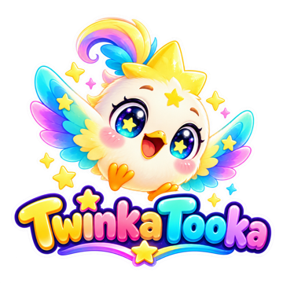

TwinkaTooka
Sing-along songs and gentle stories for children aged 2 to 5.
Watch on YouTubeWhat TwinkaTooka is
TwinkaTooka is a YouTube channel of 3D animated nursery rhymes, routine songs (brushing teeth, washing hands, bath time) and short stories, with Twinka, Tooka, Luma, Niblet, Pebble, Dewdrop and Grandpa Cloud. Every video is made for kids: gentle, colourful, and easy to sing along to, with Arabic subtitles.
TwinkaTooka Studio (our tool)
TwinkaTooka Studio is the private tool the channel's creator uses to run the channel: it uploads our own videos, sets their thumbnails, playlists and subtitles, and reads the channel's own statistics so we can make better videos. It is used only on the TwinkaTooka channel, by its owner. It does not collect anything from viewers.
Read the privacy policy.